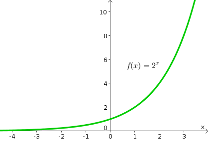

再过几天，就到2020年了。曾几何时，大伙儿还在迎接千禧年；如今一转眼，21世纪都已经过了五分之一。
有感于此，今天这篇博文就来聊聊【时间与人生】这个话题。
最近几年，俺在博文中多次提及【信噪比】。之前的讨论都是以“媒介形态”作为切入点；今天换个角度，以【时间】作为切入点。
股神巴菲特曾经说过（大意是）：他自己【从不】关心股票每天的“实时行情”。
为啥捏？稍微了解巴菲特的同学应该都知道——他的投资理念来自于本杰明·格雷厄姆创立的【价值投资理论】。对他而言，“实时行情”的波动，包含了大量随机性的市场因素（技术行话叫“背景噪声”）。由于“背景噪声”的【干扰】，（对他而言）“实时行情”缺乏参考价值。
但如果你上升到更大的时间颗粒度，比如说考察某个股票走势的“周线、月线、甚至年线”，那么趋势就会显现出来。因为在更大的时间尺度，背景噪声滤掉了；因此，信噪比提升了，也就更容易看清趋势。
那么，这个例子与“人生”有啥关系捏？
每个人的一生，都会经历许许多多事情。其中有很多事情，当时你觉得很重要；但等到10年20年之后，再次回顾此事，你可能会发觉——此事对你的人生根本无足轻重（只不过是【噪声】）。
前几年有个新闻——某年轻人为了买 iPhone 手机而不惜“卖肾”；类似的新闻还包括——为了买高档化妆品而不惜“卖卵”......
等过了10年20年之后，再来回顾上述事情，当事人会怎么想？
当然，还会有【相反】例子——有些事情，刚开始你觉得不是那么重要。但在10年20年之后，你发现当时不起眼的事情极大地改变了你的人生。
对俺而言，最典型的例子就是2009年开博。当时并没有什么感觉；写博几年后开始意识到——这个博客对俺很重要（最起码，维护这个博客的过程极大提升了个人综合能力）
“信号、噪声”的差异在于——前者的影响更持久，后者的影响更短暂。于是就引出了“寿命/生命周期”这个话题。
在刚开博的头一年（2009），俺曾经写过一个系列叫做《无处不在的二八原理》。“二八原理”为啥无处不在捏？因为大部分领域都是【不平均】分布滴。“生命周期的分布”也是如此。
比如说，让你回忆上个月看过的新闻，你能想起几条？你能回忆起来的数量，相比你上个月看过的所有新闻的总数，只是一个很小比例。而这还仅仅是“一个月前”；如果跨度是“一年前”，这个比例无疑会更低。
再比如说，每年都会有大量的书籍出版。过了十年之后，这些书籍中的 99% 都会被人淡忘（99% 都还是保守的说法，实际比例应该更高）。
刚才说到书籍。有些读者寄希望于“畅销书排行版”——他们想靠这个玩意儿，来找出那些【持久性】的著作。但这个方法也【不一定】靠谱。不信的话，你可以去翻看10到20年之前的“畅销书排行版”。里面的很多作品，如今已经完全被遗忘了。
“畅销书排行版”是经过严格筛选的一个很小的范围。如果连它都无法保证长寿命，那其它方法恐怕就更难保证了。所以，俺认为真正靠谱的就是——留给时间来检验。
书籍
比如俺分享的电子书，对于【思想性、理论性】的著作，俺通常倾向于分享该领域权威学者的代表作。某个学者能成为某领域公认的权威，（对其本人而言）已经具备了时间的检验；而如果此书又是此人的代表作，相当于具备了【双重的】时间检验。靠谱程度当然就高得多。
视频（电影 ＆ 电视剧 ＆ 短视频）
博客的老读者都晓得，俺很少看视频。
在本人看过的为数不多的影片中，大都是上映 N 年之后才去看的。如果某个片子在上映了5到10年之后，依然有很好的口碑，俺才会考虑（注：这是俺看此片的“必要条件”，但不是“充分条件”）
这个习惯帮俺规避了很多的烂片，因此也节省了很多的时间。
IT 技术（软件、编程语言、库、协议......）
很多年轻的技术人员，很喜欢追逐最新出现的技术。老实说，俺年轻的时候，也是如此。
在 IT 领域混了这么多年，俺学过很多【昙花一现】的技术（学过之后不久，这个技术就消亡了）。后来，俺慢慢懂得了【等待 ＆ 观望】。
顺便说一下：对新技术的“等待 ＆ 观望”，有一定的技巧。由于这个话题局限于 IT 领域，另外找时间聊。
很多人会有一个【误解】——以为“长寿命”的事物也代表了“高价值”。其实不然！
比如说，某个爆炸性的娱乐新闻，可能会在人们的脑海中留存很多年，但这【并不】代表该新闻具有足够高的价值（娱乐新闻并【不】提升你的个人能力）
因此，你还需要懂得——如何从长寿命的事物中筛选出【高价值】的事物。
具体如何做捏？这就要涉及到前不久俺聊到的【DIKW 模型】

（DIKW 模型）
通俗地说——I 没啥价值（或者说“价值极低”）；K 有一定的价值；而 W 才属于高价值。
比如说“某某明星出轨了”这个就属于 I 层面——仅仅是一个信息，而【不】算知识。这个信息能提升你的能力吗？不能！能完善你的知识结构吗？不能！
上述只是拿“娱乐新闻”举例。
如何更详细地区分 DIKW 这几个层面捏？前不久（2019年10月）的博文《如何【系统性学习】——从“媒介形态”聊到“DIKW 模型”》才刚刚说过，这里就不重复唠叨啦。
还没看过那篇的同学，建议先去看一看（本文后续的几个话题，与那篇存在相关性）
上一个章节提到“娱乐新闻”，再顺便谈谈“娱乐至死”。
如今这个互联网时代，有时候也被称作【娱乐至死的时代】。大部分人把大部分的业余时间都浪费在消遣性的内容。这可不是俺耸人听闻——你稍微留意身边的亲戚、朋友、同事。大部分人的大部分上网时间都是用于【消遣】（除了“娱乐新闻”，那些“搞笑视频、购物、闲聊...”也都属于消遣）。
这种现象可以很容易地用心理学加以解释——其关键在于【心理舒适区】（洋文称之为“comfort zone”）。当你进行任何消遣性的活动，你就处于【心理舒适区】。顾名思义，在这个状态下，你会觉得比较放松、舒服、惬意。
互联网的普及，尤其是 SNS（社交网络）的普及，使得每个网民更容易获得各种娱乐性/消遣性的内容——也就更容易陷入相关的【心理舒适区】。
另外，SNS 背后的【商业公司】也在推波助澜。因为每一个 SNS 平台都希望能最大化【用户粘性】。通俗地说，每个 SNS 平台都希望其用户终日泡在上面。所以，每个 SNS 平台都会采用各种手段（尤其是心理学手段）来留住用户，增加你对该平台的【依赖】。
要想跳出（脱离）“心理舒适区”，你需要动用【自控力】（也称“意志力”）。“自控力”这个玩意儿就像是肌肉——能够通过锻炼进行强化，也会因为长久不用而弱化。而且这个玩意儿还是【稀缺资源】，很容易被其它因素消耗掉；并且一旦耗尽，【无法】立即恢复（需要一定的时间才慢慢恢复）。
（注：关于“自控力”，现代心理学已经有足够多的研究，并通过实验数据支持上述说法，具体参见下一段的“引申阅读”）
由于上述这两者的特点，如果某人总是处于“心理舒适区”，其“自控力”总是得不到锻炼，就会更加弱化；而自控力弱化之后，就更容易停留在心理舒适区。久而久之，形成一个负面的正反馈（俗称“恶性循环”）。
引申阅读：
关于“心理舒适区 ＆ 自控力”的更详细讨论，可以参见如下这篇博文：
《为什么独立思考这么难？——谈谈心理学的成因，并分享俺的经验》
很多人【低估】了“消遣性内容”的【危害性/危险性】。他们误以为——这些东西仅仅是浪费时间。
实际上，比“浪费时间”更危险的是【成瘾性】。只要你理解了前一个小节所说【恶性循环】，也就能理解这个玩意儿的【成瘾性】。
如果根据事物的【损益程度】进行归类，所有事物大致可以分类为：
1. 对你有益的
2. 对你无益也无害的
3. 对你有害的
而“消遣性内容”很明显属于【有害】的这类，也就是本小节标题所说的“毒性”
“娱乐至死的时代”当然让人感到悲哀。但如果你换一个角度看问题，或许就【没】这么悲哀了——
当大部分人都沉迷于心理舒适区，只要你能跳出来，（在很多方面）你都更容易脱颖而出。换句话说，你就获得了巨大的【个人竞争优势】。
既然俺的网名叫“编程随想”，再以“软件开发”来举例。
（注：本章节【不】涉及深奥的技术，不懂 IT 的读者也能看懂）
很多程序员（尤其是入行不久的新手）容易陷入一个【误区】——以为懂的编程语言越多，能力就越强。
为啥说这是个【误区】捏？因为他们只看到了“编程语言”，而忽视了【编程范式】（洋文叫做“programming paradigm”）。
（注：对于不懂软件开发的读者，稍微解释一下——【编程范式】相当于是指导编程的“思想、方法论、套路...”）
“编程语言”有成百上千种，而“编程范式”只有大约十多种。再次回顾前面章节提及的【DIKW 模型】，“编程范式”才是真正意义上的 W（智慧）。
最近这几年，经常有读者在博客评论区询问俺关于“编程语言 ＆ 如何编程”的话题。俺多次引用了 IT 大牛 Alan Perlis（【第一个】图灵奖得主）的名言——
如何理解他这句话捏？
假设某个程序员已经掌握了“A语言”，然后又想去学习“B语言”。但如果“B语言”用到的【编程范式】“A语言”都已经有了，那就不值得再学“B语言”（注：因为工作需要而去学，另当别论）。
他这句话还可以【反过来理解】——那些能够极大影响你编程观点的语言，非常值得你去学。
这也就是为什么——IT 大牛保罗·格雷汉姆在其代表作《黑客与画家》一书中大力推荐 Lisp 的缘故。Lisp 语言（Lisp 家族）涵盖了【最多】的“编程范式”；甚至可以这么说——【所有的】“编程范式”都可以在 Lisp 家族中找到。
有个成语叫做【舍本逐末】。那些只注重“编程语言”而忽视了“编程范式”的程序猿/程序媛，就是典型的【舍本逐末】。
【舍本逐末】的现象，当然【不】仅仅出现在编程领域。几乎每一个领域，都有人在不断地犯类似错误。
在每一个领域，都存在“本/末”的差异——
所谓的“本”就是指那些“比较基础、比较本质、比较核心”的东东；所谓的“末”就是那些“比较表象、比较边缘”的东东；
“末”很多，而“本”很少；
掌握“末”比较容易，而掌握“本”比较难；
（对某个领域而言）虽然“本”很少，但你对每一个“本”的掌握，都有助于你在该领域达到一个更高的 level；相比之下，如果你只掌握了很多“末”，而没有掌握“本”，你在该领域的水平很难有【实质性】提升。
俺的网盘上曾经分享过一本心理学的经典著作叫做《The Paradox of Choice——Why More Is Less》。顺便借用一下该书的标题，来点评上述两种不同的做法——
对那些【舍本逐末】的人，体现出【多即是少】；
对那些【舍末逐本】的人，体现出【少即是多】。
为啥很多人会犯【舍本逐末】的错误捏？原因有很多，至少包括如下：
原因1
对该领域缺乏【系统性】了解，自然无法判断哪些是“本”，哪些是“末”。
原因2
（如前一个章节所说）掌握“末”比较容易，比较快；而掌握“本”比较难，比较慢。很多人为了“求快”，于是就会【舍本逐末】
关于“原因1”，俺已经专门写过一篇《如何【系统性学习】》。所以下面只谈“原因2”。
所谓的“求快”，说得更直白一些就是【急功近利】。不得不说，如今的很多年轻人都有这个毛病。
当然啦，会有很多年青的读者抱怨说：如今的生存压力这么大，不得不追求功利。比较搞笑的是，这里存在一个充满反讽意味的怪圈——越是急功近利的人，反而越【得不到】功利。多年前，俺曾经写过一篇《为啥急功近利反而赚不到钱——给拜金主义者的忠告》，说得就是这个意思。
当年那篇讲的是“经济领域”。然而在【学习领域】依然如此——
“求快”的人只满足于快速掌握某个领域的“枝节”；快虽然快，但因为【没】掌握本质性的东西，（在该领域的）水平无法得到显著的提升，因此在该领域就无法具备足够的竞争力。套用天朝的一句老话叫做——【欲速则不达】。
作为对比，那些愿意花足够的时间与精力去搞定【基本功】，打好【基础】的人，刚开始好像很慢，但后续的加速度会越来越快。这个过程有点类似“指数函数”。这类函数在刚开始的时候，斜率很小（甚至很接近于【零】），而且初期的增长趋势很类似“线性函数”；但在某个【转折点】之后，其斜率会急剧上升，并大幅度超越“线性函数”。
为了加深读者的印象，放一张指数函数的示意图。

刚才既然聊到指数函数，再顺便引出“斜率”的话题。
法国作家罗曼·罗兰在其代表作《约翰·克里斯朵夫》中有句名言，俺印象深刻，并加入到博客副标题的动态格言中。这句话是：
假如存在某种方法，能绘制出每个人的“能力-时间曲线”（综合能力随时间变化的曲线）。俺充分相信，大部分人都是“边际【递减】函数”（斜率持续变小）。而且很多人可能在30岁之前，该函数的斜率就已经趋向于零（接近于水平线）。如果你充分理解本文前面章节所说的这些，也就能理解——为啥大部分人的能力曲线属于“边际【递减】”。
注：
考虑到某些读者可能会来抬杠，俺先说明一下——
要想比较全面地评价某个人的综合能力，需要用【矩阵】才能充分地表达；而【不可能】约化成某个“标量”。因此，上述比喻严格来讲是有缺陷滴。
但考虑到本博客读者群体的差异化（有些读者只是初中生），俺还是【不】引入“矩阵”相关的讨论，否则会把很多人吓跑。
前一个小节说的是——绝大部分人的变化属于“边际递【减】”。
但还有一小撮人，他们的能力曲线竟然是“边际递【增】”。为啥会这样捏？同样是因为互联网。
在互联网【没】出现之前，要想让“个人能力曲线”达到“边际递【增】”是非常非常难滴！有了互联网之后，大部分人沉迷在【娱乐至死】的状态，但少数【没有】沉迷其中的人，如果善于学习（尤其是“系统性学习”），如果充满求知的欲望，如果运气还不算太差......在互联网这个大环境下，完全有可能达到“边际递【增】”的状态。
某些不那么聪明的读者，可能会觉得纳闷——能够保持“能力曲线”的斜率已经不错了，为啥有些人还能做到“斜率递【增】”？
这其中的奥妙，俺已经在《为什么独立思考这么难？——谈谈心理学的成因，并分享俺的经验》一文中提到过了。“学习能力 ＆ 思维能力”类似于“自控力”，也是可以通过锻炼而强化。
那些喜欢学习的人（尤其是喜欢【跨领域 ＆ 系统性】学习的人），这几方面的能力会不断强化；而且喜欢学习的人，通常也能体会到【学习的乐趣】，于是又增加了一个新的【正反馈】。
上述诸多因素，使得“能力曲线”的斜率递【增】。
（在上一篇博文的评论区，正好与某热心读者聊到【中年职场危机】。顺便把前几天的讨论摘录出来）
如果你理解了大多数人的能力曲线是这种性质，就有助于理解【中年职场危机】的本质——
刚工作的年轻人，大都单身（未婚），没小孩，不用顾家（一人吃饱全家不饿）。而且身体好，能承受高强度工作压力，对薪酬要求也没那么高；
（同一个人）到了中年，通常已婚，大都有小孩，多半要养家，身体也没有以前那么好，无法承受高强度工作压力，而薪酬水平的要求却增加了很多（相比年轻时）。
简而言之，中年员工在“成本 ＆ 健康”方面，都变差了（优势下降了）；如果“综合能力”的提升无法抵消上述这两者的下降，（在上司或老板眼里）这个人的【性价比】就下降了——这也就是“中年职场危机”的主要根源。
但对于那一小撮能够达到“边际【递增】”的人，他们的性价比不但没下降，反而上升了——自然【不】存在所谓的“中年职场危机”。
很多人常犯的一个【错误】是——以【线性】的方式思考问题。容易犯这个错误的人，也就容易把“工作年限”混淆为“综合能力”。
但实际情况是——“工作年限”【不】等于“工作经验”；“工作经验”也【不】等于“综合能力”。
比如说：对某些工作岗位（工种），由于其工作的性质＆内容是【高度重复】滴，“工作1年”与“工作10年”，积累的经验其实没啥区别。
再比如说：某些行业的工作，虽然有足够大的差异化，从而使得“工龄”能够转化为“工作经验”，但这些经验是高度【局限性】滴（只能用于该领域）。一旦该行业（领域）被颠覆，这些人之前积累的工作经验（行业经验）就再也没有用武之地了。换句话说，这些人虽然积累了足够多的经验，但依然很脆弱。他所在的行业如果被摧毁了，他的职业生涯也跟着完蛋了。
在“综合能力”里面，那些【真正重要】的成分，通常是【跨行业/跨领域】滴！而且不受年龄限制（可以受用终身）。
举几个例子：
最近这几年，俺写了好多博文谈【学习能力 ＆ 思维能力】。因为这2个玩意儿就是【跨行业/跨领域】滴！
再比如说：前面提到的“自控力”也属于【跨行业/跨领域】的要素。
在上一个章节，俺提到互联网对两类人导致完全相反的影响。某些聪明的读者应该已经猜到——俺要开始聊【马太效应】了。
（注：没听过这个词的同学，先猛击上述的维基百科链接）
去年（2018）年末发过一篇【很重要的】博文《读书笔记：＜反脆弱——从不确定性中获益＞》，文中已经提到上述观点。俺当时的原话是——
难道只有互联网才导致“马太效应”吗？当然不是！
严格来讲，任何一种科技，只要其【普及性 ＆ 影响力】达到一定的水平，都会引发“马太效应”。互联网导致的“马太效应”如此之明显，主要是因为互联网的影响力实在太大了（渗透到每个行业，渗透到社会的每个层面）。
为啥科技会引发“马太效应”捏？这里面当然有很多原因，而且会牵涉到很多不同的领域（包括人文领域）。考虑到本文的主题，俺只聊2点。
在工业革命【之后】，从业人员（包括“蓝领 ＆ 白领”）的“平均劳动时间”处于【递减】状态。再次提醒：考察“平均劳动时间”的变化，必须选取【足够大】的时间颗粒度，这有助于帮你滤掉噪声（参见本文开头的介绍）。
“平均劳动时间”【递减】是很正常滴——因为科技水平上升之后，从业人员（包括“蓝领 ＆ 白领”）的【生产率】当然也跟着提升。于是，只需要更少的人，就可以创造出比以前（工业革命前）多好几个数量级的财富。
“平均劳动时间”【递减】，也就意味着“平均闲暇时间”【递增】。可惜的是，大部分人把闲暇时间都浪费掉了；只有极少数人懂得利用这些空闲时间。于是，【马太效应】就显现出来啦。
著名思想家胡适说过一句名言：
既然聊到“闲暇时间”，俺再次吐槽一下【996工作制】——
俺之所以极力反对这个玩意儿，不仅仅因为它是【反人性】滴，而且它也违背了文明发展的潮流。
某些黑心资本家可以口吐莲花，把一个臭不可闻的压榨制度，吹嘘成所谓的“福报”。
谁要是相信这种忽悠，那就成了傻逼，活该被收【智商税】 :)
工业革命之前，人类社会中的【行业结构】，可能在【几百年】的时间范围内都保持稳定；工业革命之后，行业的变动开始频繁，可能每隔几十年就会有变动；等到互联网普及之后，几乎【每年】都能看到某些行业被互联网颠覆。
俺在博客评论区与读者交流时，曾经引用过 IT 大牛 KK（凯文·凯利）的一句名言（大意是）：
（如前所述）不光是互联网，任何一项科技成果，只要达到一定的【普及性 ＆ 影响力】，就会带来行业的变化（出现新的行业、有的行业消失、有的重新洗牌）。
行业变动越来越频繁且剧烈，这就引发另一个层面的“马太效应”。那些难以适应变化的人，会被淘汰（或被边缘化）；而那些能适应变化的人，就不用担心；更牛逼的人，不但适应了变化，而且还能利用这种变化，并从中获益（这就是俺在博客中多次提及的【反脆弱性】）
俺不止一次地唠叨：去年（2018）年末发的那篇《读书笔记：＜反脆弱——从不确定性中获益＞》【很重要、很有价值】。可惜，很多读者没有引起足够重视。
如果你看过原书或看完那篇读书笔记，并且【真正理解】了“反脆弱”这个概念，就能明白——为啥科技导致行业的剧烈变动，反而让某些人大大受益。
几天之后，就要跨入本世纪的20年代啦。
再次提醒大伙儿：科技的发展趋势具有【加速】的特质（斜率递增）。科技所带来的社会变革，会越来越快，而且越来越剧烈。
希望看过这篇博文的读者，【不要】沦为平庸的大多数，【不要】成为马太效应的牺牲品。
后续更新：
本文发出之后又过了一年（2020年底），俺写了一篇《学习与人生——700篇博文之感悟》，从“学习”的角度讨论人生相关的话题。
俺博客上，和本文相关的帖子（需翻墙）：
《学习与人生——700篇博文之感悟》
《如何【系统性学习】——从“媒介形态”聊到“DIKW 模型”》
《为什么独立思考这么难？——谈谈心理学的成因，并分享俺的经验》
《读书笔记：＜反脆弱——从不确定性中获益＞》
《如何完善自己的知识结构》
《学习技术的三部曲：WHAT、HOW、WHY》
《用提问来促进思维——兼谈【非】技术领域的 WHAT HOW WHY 三部曲》
《德鲁克谈【自我管理】——＜哈佛商业评论＞史上最受欢迎的文章》
《每周转载：关于人生（网文3篇）》
《为啥急功近利反而赚不到钱——给拜金主义者的忠告》
《“996工作制”只不过是【劫贫济富】的缩影——“马云奇葩言论”随想》
《无处不在的二八原理》（系列）
有感于此，今天这篇博文就来聊聊【时间与人生】这个话题。
★噪声 VS 信号
最近几年，俺在博文中多次提及【信噪比】。之前的讨论都是以“媒介形态”作为切入点；今天换个角度，以【时间】作为切入点。
股神巴菲特曾经说过（大意是）：他自己【从不】关心股票每天的“实时行情”。
为啥捏？稍微了解巴菲特的同学应该都知道——他的投资理念来自于本杰明·格雷厄姆创立的【价值投资理论】。对他而言，“实时行情”的波动，包含了大量随机性的市场因素（技术行话叫“背景噪声”）。由于“背景噪声”的【干扰】，（对他而言）“实时行情”缺乏参考价值。
但如果你上升到更大的时间颗粒度，比如说考察某个股票走势的“周线、月线、甚至年线”，那么趋势就会显现出来。因为在更大的时间尺度，背景噪声滤掉了；因此，信噪比提升了，也就更容易看清趋势。
那么，这个例子与“人生”有啥关系捏？
每个人的一生，都会经历许许多多事情。其中有很多事情，当时你觉得很重要；但等到10年20年之后，再次回顾此事，你可能会发觉——此事对你的人生根本无足轻重（只不过是【噪声】）。
前几年有个新闻——某年轻人为了买 iPhone 手机而不惜“卖肾”；类似的新闻还包括——为了买高档化妆品而不惜“卖卵”......
等过了10年20年之后，再来回顾上述事情，当事人会怎么想？
当然，还会有【相反】例子——有些事情，刚开始你觉得不是那么重要。但在10年20年之后，你发现当时不起眼的事情极大地改变了你的人生。
对俺而言，最典型的例子就是2009年开博。当时并没有什么感觉；写博几年后开始意识到——这个博客对俺很重要（最起码，维护这个博客的过程极大提升了个人综合能力）
★短寿命 VS 长寿命
“信号、噪声”的差异在于——前者的影响更持久，后者的影响更短暂。于是就引出了“寿命/生命周期”这个话题。
◇“生命周期”的分布，高度【不】平均
在刚开博的头一年（2009），俺曾经写过一个系列叫做《无处不在的二八原理》。“二八原理”为啥无处不在捏？因为大部分领域都是【不平均】分布滴。“生命周期的分布”也是如此。
比如说，让你回忆上个月看过的新闻，你能想起几条？你能回忆起来的数量，相比你上个月看过的所有新闻的总数，只是一个很小比例。而这还仅仅是“一个月前”；如果跨度是“一年前”，这个比例无疑会更低。
再比如说，每年都会有大量的书籍出版。过了十年之后，这些书籍中的 99% 都会被人淡忘（99% 都还是保守的说法，实际比例应该更高）。
◇基于时间的检验
刚才说到书籍。有些读者寄希望于“畅销书排行版”——他们想靠这个玩意儿，来找出那些【持久性】的著作。但这个方法也【不一定】靠谱。不信的话，你可以去翻看10到20年之前的“畅销书排行版”。里面的很多作品，如今已经完全被遗忘了。
“畅销书排行版”是经过严格筛选的一个很小的范围。如果连它都无法保证长寿命，那其它方法恐怕就更难保证了。所以，俺认为真正靠谱的就是——留给时间来检验。
◇俺的经验
书籍
比如俺分享的电子书，对于【思想性、理论性】的著作，俺通常倾向于分享该领域权威学者的代表作。某个学者能成为某领域公认的权威，（对其本人而言）已经具备了时间的检验；而如果此书又是此人的代表作，相当于具备了【双重的】时间检验。靠谱程度当然就高得多。
视频（电影 ＆ 电视剧 ＆ 短视频）
博客的老读者都晓得，俺很少看视频。
在本人看过的为数不多的影片中，大都是上映 N 年之后才去看的。如果某个片子在上映了5到10年之后，依然有很好的口碑，俺才会考虑（注：这是俺看此片的“必要条件”，但不是“充分条件”）
这个习惯帮俺规避了很多的烂片，因此也节省了很多的时间。
IT 技术（软件、编程语言、库、协议......）
很多年轻的技术人员，很喜欢追逐最新出现的技术。老实说，俺年轻的时候，也是如此。
在 IT 领域混了这么多年，俺学过很多【昙花一现】的技术（学过之后不久，这个技术就消亡了）。后来，俺慢慢懂得了【等待 ＆ 观望】。
顺便说一下：对新技术的“等待 ＆ 观望”，有一定的技巧。由于这个话题局限于 IT 领域，另外找时间聊。
★低价值 VS 高价值
◇DIKW 模型
很多人会有一个【误解】——以为“长寿命”的事物也代表了“高价值”。其实不然！
比如说，某个爆炸性的娱乐新闻，可能会在人们的脑海中留存很多年，但这【并不】代表该新闻具有足够高的价值（娱乐新闻并【不】提升你的个人能力）
因此，你还需要懂得——如何从长寿命的事物中筛选出【高价值】的事物。
具体如何做捏？这就要涉及到前不久俺聊到的【DIKW 模型】
（DIKW 模型）
通俗地说——I 没啥价值（或者说“价值极低”）；K 有一定的价值；而 W 才属于高价值。
比如说“某某明星出轨了”这个就属于 I 层面——仅仅是一个信息，而【不】算知识。这个信息能提升你的能力吗？不能！能完善你的知识结构吗？不能！
◇如何区分 DIKW？
上述只是拿“娱乐新闻”举例。
如何更详细地区分 DIKW 这几个层面捏？前不久（2019年10月）的博文《如何【系统性学习】——从“媒介形态”聊到“DIKW 模型”》才刚刚说过，这里就不重复唠叨啦。
还没看过那篇的同学，建议先去看一看（本文后续的几个话题，与那篇存在相关性）
★娱乐至死 VS 独善其身
◇心理舒适区
上一个章节提到“娱乐新闻”，再顺便谈谈“娱乐至死”。
如今这个互联网时代，有时候也被称作【娱乐至死的时代】。大部分人把大部分的业余时间都浪费在消遣性的内容。这可不是俺耸人听闻——你稍微留意身边的亲戚、朋友、同事。大部分人的大部分上网时间都是用于【消遣】（除了“娱乐新闻”，那些“搞笑视频、购物、闲聊...”也都属于消遣）。
这种现象可以很容易地用心理学加以解释——其关键在于【心理舒适区】（洋文称之为“comfort zone”）。当你进行任何消遣性的活动，你就处于【心理舒适区】。顾名思义，在这个状态下，你会觉得比较放松、舒服、惬意。
互联网的普及，尤其是 SNS（社交网络）的普及，使得每个网民更容易获得各种娱乐性/消遣性的内容——也就更容易陷入相关的【心理舒适区】。
另外，SNS 背后的【商业公司】也在推波助澜。因为每一个 SNS 平台都希望能最大化【用户粘性】。通俗地说，每个 SNS 平台都希望其用户终日泡在上面。所以，每个 SNS 平台都会采用各种手段（尤其是心理学手段）来留住用户，增加你对该平台的【依赖】。
◇自控力（意志力）
要想跳出（脱离）“心理舒适区”，你需要动用【自控力】（也称“意志力”）。“自控力”这个玩意儿就像是肌肉——能够通过锻炼进行强化，也会因为长久不用而弱化。而且这个玩意儿还是【稀缺资源】，很容易被其它因素消耗掉；并且一旦耗尽，【无法】立即恢复（需要一定的时间才慢慢恢复）。
（注：关于“自控力”，现代心理学已经有足够多的研究，并通过实验数据支持上述说法，具体参见下一段的“引申阅读”）
由于上述这两者的特点，如果某人总是处于“心理舒适区”，其“自控力”总是得不到锻炼，就会更加弱化；而自控力弱化之后，就更容易停留在心理舒适区。久而久之，形成一个负面的正反馈（俗称“恶性循环”）。
引申阅读：
关于“心理舒适区 ＆ 自控力”的更详细讨论，可以参见如下这篇博文：
《为什么独立思考这么难？——谈谈心理学的成因，并分享俺的经验》
◇“消遣性内容”的【毒性】
很多人【低估】了“消遣性内容”的【危害性/危险性】。他们误以为——这些东西仅仅是浪费时间。
实际上，比“浪费时间”更危险的是【成瘾性】。只要你理解了前一个小节所说【恶性循环】，也就能理解这个玩意儿的【成瘾性】。
如果根据事物的【损益程度】进行归类，所有事物大致可以分类为：
1. 对你有益的
2. 对你无益也无害的
3. 对你有害的
而“消遣性内容”很明显属于【有害】的这类，也就是本小节标题所说的“毒性”
◇换个角度思考
“娱乐至死的时代”当然让人感到悲哀。但如果你换一个角度看问题，或许就【没】这么悲哀了——
当大部分人都沉迷于心理舒适区，只要你能跳出来，（在很多方面）你都更容易脱颖而出。换句话说，你就获得了巨大的【个人竞争优势】。
★多 VS 少
◇软件开发的例子
既然俺的网名叫“编程随想”，再以“软件开发”来举例。
（注：本章节【不】涉及深奥的技术，不懂 IT 的读者也能看懂）
很多程序员（尤其是入行不久的新手）容易陷入一个【误区】——以为懂的编程语言越多，能力就越强。
为啥说这是个【误区】捏？因为他们只看到了“编程语言”，而忽视了【编程范式】（洋文叫做“programming paradigm”）。
（注：对于不懂软件开发的读者，稍微解释一下——【编程范式】相当于是指导编程的“思想、方法论、套路...”）
“编程语言”有成百上千种，而“编程范式”只有大约十多种。再次回顾前面章节提及的【DIKW 模型】，“编程范式”才是真正意义上的 W（智慧）。
最近这几年，经常有读者在博客评论区询问俺关于“编程语言 ＆ 如何编程”的话题。俺多次引用了 IT 大牛 Alan Perlis（【第一个】图灵奖得主）的名言——
不能影响你编程观点的语言，不值得你去学！
如何理解他这句话捏？
假设某个程序员已经掌握了“A语言”，然后又想去学习“B语言”。但如果“B语言”用到的【编程范式】“A语言”都已经有了，那就不值得再学“B语言”（注：因为工作需要而去学，另当别论）。
他这句话还可以【反过来理解】——那些能够极大影响你编程观点的语言，非常值得你去学。
这也就是为什么——IT 大牛保罗·格雷汉姆在其代表作《黑客与画家》一书中大力推荐 Lisp 的缘故。Lisp 语言（Lisp 家族）涵盖了【最多】的“编程范式”；甚至可以这么说——【所有的】“编程范式”都可以在 Lisp 家族中找到。
◇【舍本逐末】的现象
有个成语叫做【舍本逐末】。那些只注重“编程语言”而忽视了“编程范式”的程序猿/程序媛，就是典型的【舍本逐末】。
【舍本逐末】的现象，当然【不】仅仅出现在编程领域。几乎每一个领域，都有人在不断地犯类似错误。
在每一个领域，都存在“本/末”的差异——
所谓的“本”就是指那些“比较基础、比较本质、比较核心”的东东；所谓的“末”就是那些“比较表象、比较边缘”的东东；
“末”很多，而“本”很少；
掌握“末”比较容易，而掌握“本”比较难；
（对某个领域而言）虽然“本”很少，但你对每一个“本”的掌握，都有助于你在该领域达到一个更高的 level；相比之下，如果你只掌握了很多“末”，而没有掌握“本”，你在该领域的水平很难有【实质性】提升。
俺的网盘上曾经分享过一本心理学的经典著作叫做《The Paradox of Choice——Why More Is Less》。顺便借用一下该书的标题，来点评上述两种不同的做法——
对那些【舍本逐末】的人，体现出【多即是少】；
对那些【舍末逐本】的人，体现出【少即是多】。
★快 VS 慢
◇“舍本逐末”的原因
为啥很多人会犯【舍本逐末】的错误捏？原因有很多，至少包括如下：
原因1
对该领域缺乏【系统性】了解，自然无法判断哪些是“本”，哪些是“末”。
原因2
（如前一个章节所说）掌握“末”比较容易，比较快；而掌握“本”比较难，比较慢。很多人为了“求快”，于是就会【舍本逐末】
关于“原因1”，俺已经专门写过一篇《如何【系统性学习】》。所以下面只谈“原因2”。
◇欲速则不达
所谓的“求快”，说得更直白一些就是【急功近利】。不得不说，如今的很多年轻人都有这个毛病。
当然啦，会有很多年青的读者抱怨说：如今的生存压力这么大，不得不追求功利。比较搞笑的是，这里存在一个充满反讽意味的怪圈——越是急功近利的人，反而越【得不到】功利。多年前，俺曾经写过一篇《为啥急功近利反而赚不到钱——给拜金主义者的忠告》，说得就是这个意思。
当年那篇讲的是“经济领域”。然而在【学习领域】依然如此——
“求快”的人只满足于快速掌握某个领域的“枝节”；快虽然快，但因为【没】掌握本质性的东西，（在该领域的）水平无法得到显著的提升，因此在该领域就无法具备足够的竞争力。套用天朝的一句老话叫做——【欲速则不达】。
◇慢即是快
作为对比，那些愿意花足够的时间与精力去搞定【基本功】，打好【基础】的人，刚开始好像很慢，但后续的加速度会越来越快。这个过程有点类似“指数函数”。这类函数在刚开始的时候，斜率很小（甚至很接近于【零】），而且初期的增长趋势很类似“线性函数”；但在某个【转折点】之后，其斜率会急剧上升，并大幅度超越“线性函数”。
为了加深读者的印象，放一张指数函数的示意图。
★边际递减 VS 边际递增
刚才既然聊到指数函数，再顺便引出“斜率”的话题。
◇边际递减（斜率变小）
法国作家罗曼·罗兰在其代表作《约翰·克里斯朵夫》中有句名言，俺印象深刻，并加入到博客副标题的动态格言中。这句话是：
大多数人在20到30岁就已经过完自己的一生；
一过了这个年龄段，他们就变成自己的影子，以后的生命只是在不断重复自己...
假如存在某种方法，能绘制出每个人的“能力-时间曲线”（综合能力随时间变化的曲线）。俺充分相信，大部分人都是“边际【递减】函数”（斜率持续变小）。而且很多人可能在30岁之前，该函数的斜率就已经趋向于零（接近于水平线）。如果你充分理解本文前面章节所说的这些，也就能理解——为啥大部分人的能力曲线属于“边际【递减】”。
注：
考虑到某些读者可能会来抬杠，俺先说明一下——
要想比较全面地评价某个人的综合能力，需要用【矩阵】才能充分地表达；而【不可能】约化成某个“标量”。因此，上述比喻严格来讲是有缺陷滴。
但考虑到本博客读者群体的差异化（有些读者只是初中生），俺还是【不】引入“矩阵”相关的讨论，否则会把很多人吓跑。
◇边际递增（斜率变大）
前一个小节说的是——绝大部分人的变化属于“边际递【减】”。
但还有一小撮人，他们的能力曲线竟然是“边际递【增】”。为啥会这样捏？同样是因为互联网。
在互联网【没】出现之前，要想让“个人能力曲线”达到“边际递【增】”是非常非常难滴！有了互联网之后，大部分人沉迷在【娱乐至死】的状态，但少数【没有】沉迷其中的人，如果善于学习（尤其是“系统性学习”），如果充满求知的欲望，如果运气还不算太差......在互联网这个大环境下，完全有可能达到“边际递【增】”的状态。
某些不那么聪明的读者，可能会觉得纳闷——能够保持“能力曲线”的斜率已经不错了，为啥有些人还能做到“斜率递【增】”？
这其中的奥妙，俺已经在《为什么独立思考这么难？——谈谈心理学的成因，并分享俺的经验》一文中提到过了。“学习能力 ＆ 思维能力”类似于“自控力”，也是可以通过锻炼而强化。
那些喜欢学习的人（尤其是喜欢【跨领域 ＆ 系统性】学习的人），这几方面的能力会不断强化；而且喜欢学习的人，通常也能体会到【学习的乐趣】，于是又增加了一个新的【正反馈】。
上述诸多因素，使得“能力曲线”的斜率递【增】。
◇“中年职场危机”的根源
（在上一篇博文的评论区，正好与某热心读者聊到【中年职场危机】。顺便把前几天的讨论摘录出来）
如果你理解了大多数人的能力曲线是这种性质，就有助于理解【中年职场危机】的本质——
刚工作的年轻人，大都单身（未婚），没小孩，不用顾家（一人吃饱全家不饿）。而且身体好，能承受高强度工作压力，对薪酬要求也没那么高；
（同一个人）到了中年，通常已婚，大都有小孩，多半要养家，身体也没有以前那么好，无法承受高强度工作压力，而薪酬水平的要求却增加了很多（相比年轻时）。
简而言之，中年员工在“成本 ＆ 健康”方面，都变差了（优势下降了）；如果“综合能力”的提升无法抵消上述这两者的下降，（在上司或老板眼里）这个人的【性价比】就下降了——这也就是“中年职场危机”的主要根源。
但对于那一小撮能够达到“边际【递增】”的人，他们的性价比不但没下降，反而上升了——自然【不】存在所谓的“中年职场危机”。
◇关于“工作年限”的【误区】
很多人常犯的一个【错误】是——以【线性】的方式思考问题。容易犯这个错误的人，也就容易把“工作年限”混淆为“综合能力”。
但实际情况是——“工作年限”【不】等于“工作经验”；“工作经验”也【不】等于“综合能力”。
比如说：对某些工作岗位（工种），由于其工作的性质＆内容是【高度重复】滴，“工作1年”与“工作10年”，积累的经验其实没啥区别。
再比如说：某些行业的工作，虽然有足够大的差异化，从而使得“工龄”能够转化为“工作经验”，但这些经验是高度【局限性】滴（只能用于该领域）。一旦该行业（领域）被颠覆，这些人之前积累的工作经验（行业经验）就再也没有用武之地了。换句话说，这些人虽然积累了足够多的经验，但依然很脆弱。他所在的行业如果被摧毁了，他的职业生涯也跟着完蛋了。
在“综合能力”里面，那些【真正重要】的成分，通常是【跨行业/跨领域】滴！而且不受年龄限制（可以受用终身）。
举几个例子：
最近这几年，俺写了好多博文谈【学习能力 ＆ 思维能力】。因为这2个玩意儿就是【跨行业/跨领域】滴！
再比如说：前面提到的“自控力”也属于【跨行业/跨领域】的要素。
★越来越差 VS 越来越好
◇互联网的马太效应
在上一个章节，俺提到互联网对两类人导致完全相反的影响。某些聪明的读者应该已经猜到——俺要开始聊【马太效应】了。
（注：没听过这个词的同学，先猛击上述的维基百科链接）
去年（2018）年末发过一篇【很重要的】博文《读书笔记：＜反脆弱——从不确定性中获益＞》，文中已经提到上述观点。俺当时的原话是——
信息时代，当互联网普及之后，在很多领域产生了【马太效应】。
◇【科技】的马太效应
难道只有互联网才导致“马太效应”吗？当然不是！
严格来讲，任何一种科技，只要其【普及性 ＆ 影响力】达到一定的水平，都会引发“马太效应”。互联网导致的“马太效应”如此之明显，主要是因为互联网的影响力实在太大了（渗透到每个行业，渗透到社会的每个层面）。
为啥科技会引发“马太效应”捏？这里面当然有很多原因，而且会牵涉到很多不同的领域（包括人文领域）。考虑到本文的主题，俺只聊2点。
◇科技对【闲暇时间】的影响
在工业革命【之后】，从业人员（包括“蓝领 ＆ 白领”）的“平均劳动时间”处于【递减】状态。再次提醒：考察“平均劳动时间”的变化，必须选取【足够大】的时间颗粒度，这有助于帮你滤掉噪声（参见本文开头的介绍）。
“平均劳动时间”【递减】是很正常滴——因为科技水平上升之后，从业人员（包括“蓝领 ＆ 白领”）的【生产率】当然也跟着提升。于是，只需要更少的人，就可以创造出比以前（工业革命前）多好几个数量级的财富。
“平均劳动时间”【递减】，也就意味着“平均闲暇时间”【递增】。可惜的是，大部分人把闲暇时间都浪费掉了；只有极少数人懂得利用这些空闲时间。于是，【马太效应】就显现出来啦。
著名思想家胡适说过一句名言：
你要看一个国家的文明，只需考察三件事——虽然他说的是“国家层面”；但他所说的最后一条，放到【个人层面】依然适用。
第一，看他们怎样待小孩子；
第二，看他们怎样待女人；
第三，看他们怎样利用闲暇的时间。
既然聊到“闲暇时间”，俺再次吐槽一下【996工作制】——
俺之所以极力反对这个玩意儿，不仅仅因为它是【反人性】滴，而且它也违背了文明发展的潮流。
某些黑心资本家可以口吐莲花，把一个臭不可闻的压榨制度，吹嘘成所谓的“福报”。
谁要是相信这种忽悠，那就成了傻逼，活该被收【智商税】 :)
◇科技对【行业】的影响
工业革命之前，人类社会中的【行业结构】，可能在【几百年】的时间范围内都保持稳定；工业革命之后，行业的变动开始频繁，可能每隔几十年就会有变动；等到互联网普及之后，几乎【每年】都能看到某些行业被互联网颠覆。
俺在博客评论区与读者交流时，曾经引用过 IT 大牛 KK（凯文·凯利）的一句名言（大意是）：
只有两种行业：一种已经被互联网颠覆，另一种正在被互联网颠覆考虑到某些读者可能会误解这句话，俺提醒一下：并【不是】说，某个行业被互联网颠覆过之后，就不再被颠覆；实际情况是，某些行业会被颠覆好几轮。
（如前所述）不光是互联网，任何一项科技成果，只要达到一定的【普及性 ＆ 影响力】，就会带来行业的变化（出现新的行业、有的行业消失、有的重新洗牌）。
行业变动越来越频繁且剧烈，这就引发另一个层面的“马太效应”。那些难以适应变化的人，会被淘汰（或被边缘化）；而那些能适应变化的人，就不用担心；更牛逼的人，不但适应了变化，而且还能利用这种变化，并从中获益（这就是俺在博客中多次提及的【反脆弱性】）
俺不止一次地唠叨：去年（2018）年末发的那篇《读书笔记：＜反脆弱——从不确定性中获益＞》【很重要、很有价值】。可惜，很多读者没有引起足够重视。
如果你看过原书或看完那篇读书笔记，并且【真正理解】了“反脆弱”这个概念，就能明白——为啥科技导致行业的剧烈变动，反而让某些人大大受益。
★结尾寄语
几天之后，就要跨入本世纪的20年代啦。
再次提醒大伙儿：科技的发展趋势具有【加速】的特质（斜率递增）。科技所带来的社会变革，会越来越快，而且越来越剧烈。
希望看过这篇博文的读者，【不要】沦为平庸的大多数，【不要】成为马太效应的牺牲品。
后续更新：
本文发出之后又过了一年（2020年底），俺写了一篇《学习与人生——700篇博文之感悟》，从“学习”的角度讨论人生相关的话题。
俺博客上，和本文相关的帖子（需翻墙）：
《学习与人生——700篇博文之感悟》
《如何【系统性学习】——从“媒介形态”聊到“DIKW 模型”》
《为什么独立思考这么难？——谈谈心理学的成因，并分享俺的经验》
《读书笔记：＜反脆弱——从不确定性中获益＞》
《如何完善自己的知识结构》
《学习技术的三部曲：WHAT、HOW、WHY》
《用提问来促进思维——兼谈【非】技术领域的 WHAT HOW WHY 三部曲》
《德鲁克谈【自我管理】——＜哈佛商业评论＞史上最受欢迎的文章》
《每周转载：关于人生（网文3篇）》
《为啥急功近利反而赚不到钱——给拜金主义者的忠告》
《“996工作制”只不过是【劫贫济富】的缩影——“马云奇葩言论”随想》
《无处不在的二八原理》（系列）
版权声明
本博客所有的原创文章，作者皆保留版权。转载必须包含本声明，保持本文完整，并以超链接形式注明作者编程随想和本文原始地址：
https://program-think.blogspot.com/2019/12/Time-and-Life.html
本博客所有的原创文章，作者皆保留版权。转载必须包含本声明，保持本文完整，并以超链接形式注明作者编程随想和本文原始地址：
https://program-think.blogspot.com/2019/12/Time-and-Life.html